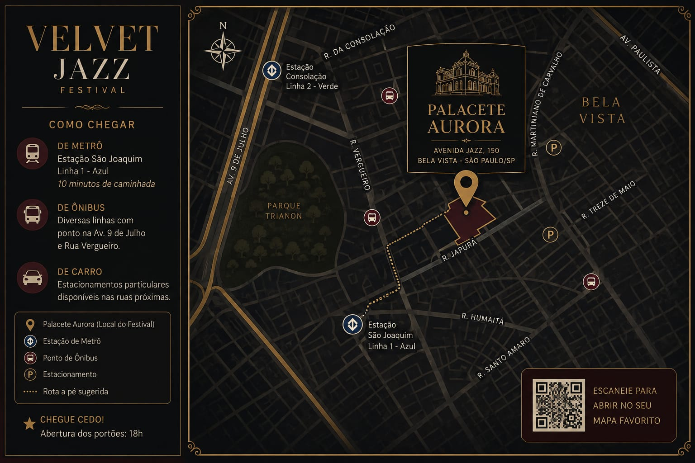

Informações
Tudo o que você precisa saber para chegar e aproveitar o festival.
Endereço
Palacete Aurora
Avenida Jazz, 150 — Bela Vista
São Paulo — SP
Como chegar
O local fica próximo a linhas de ônibus e metrô. Também é possível chegar de carro ou aplicativo de transporte.
Horários
Abertura dos portões: 18h
Início dos shows: 19h
Encerramento: 00h

O que pode levar
- Documento de identificação
- Celular e câmera pequena
- Protetor solar
- Itens de acessibilidade
- Uma garrafa de água reutilizável
O que não pode levar
- Objetos cortantes
- Bebidas alcoólicas de fora
- Armas ou objetos perigosos
- Recipientes de vidro
- Itens que possam colocar outras pessoas em risco